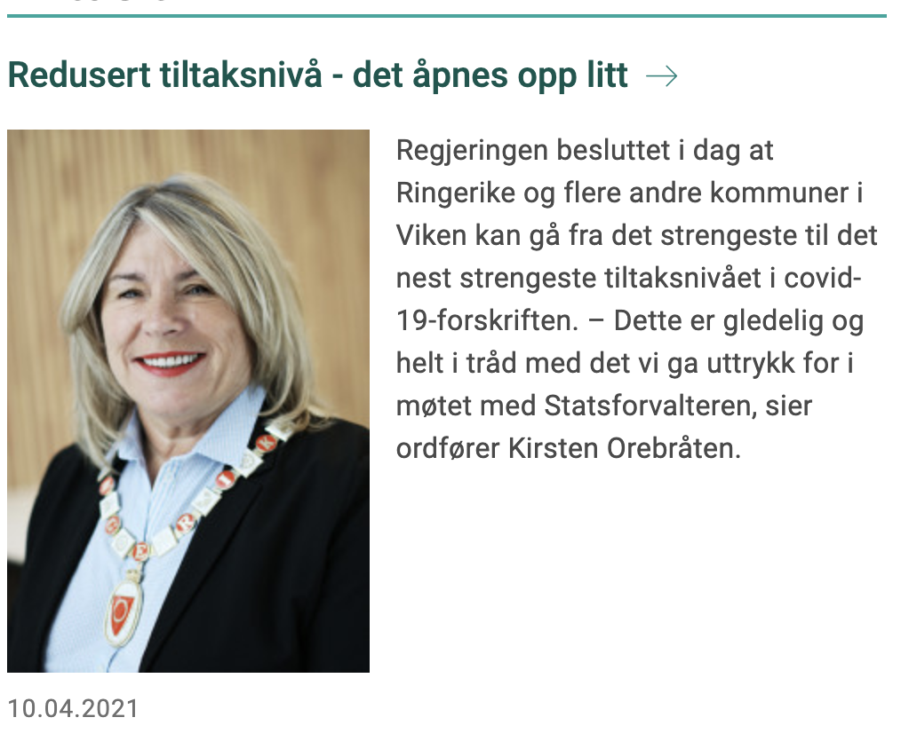

Innlegg
Vi åpner treningen for de under 20 år.

Gode nyheter.
Da er det besluttet at de under 20 år i Ringerike igjen kan trene innendørs. Klubben åpner derfor opp for trening med de midlertidige treningstidene vi har hatt en god stund nå fra mandag 12.04.2021. Vi gleder oss til å se dere på trening igjen.
Styret/instruktørene har besluttet at instruktørene i klubben vil bruke munnbind under treningen en periode fremover. Dette som et ekstra tiltak nå som vi får lov til å starte opp igjen. Vi vil fortløpende vurdere om dette har noe for seg og hvor lenge vi skal opprettholde dette.
Mer informasjon om tiltak i Ringerike kommune finer du på kommunes nettsted om Korona: https://www.ringerike.kommune.no/korona/